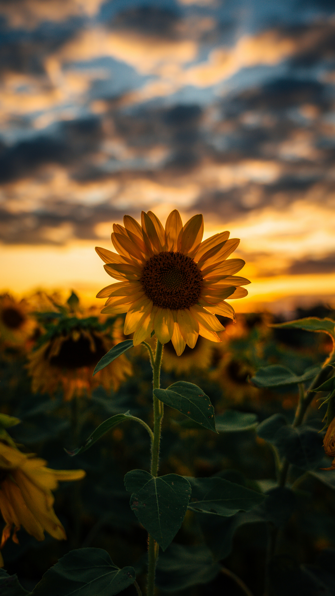
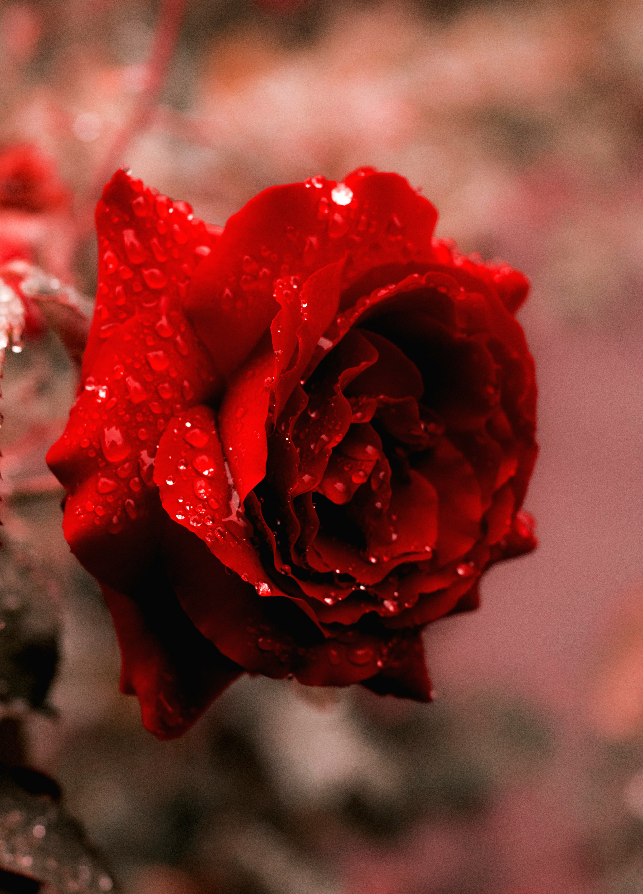
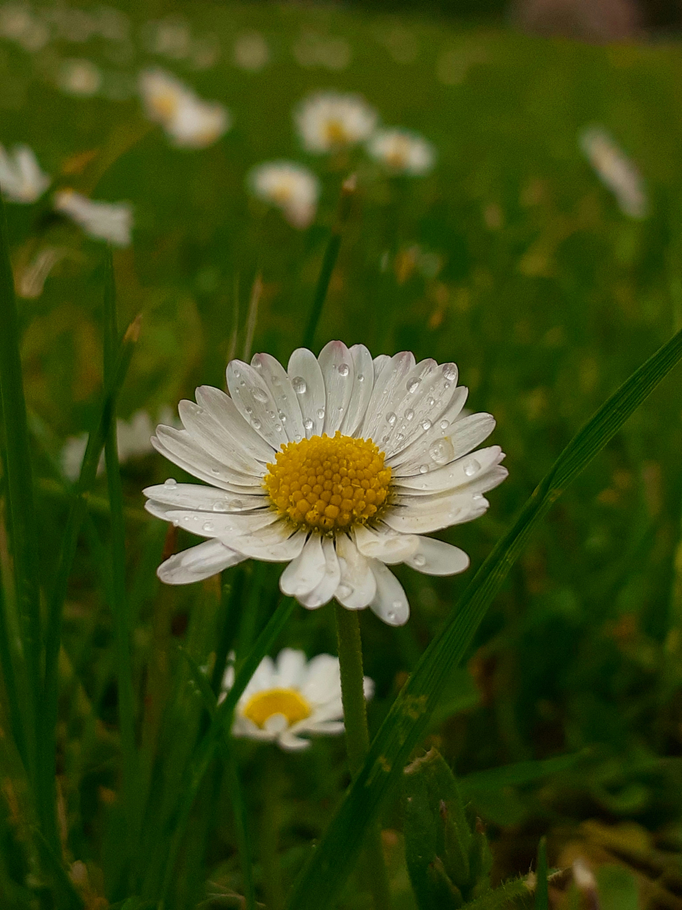
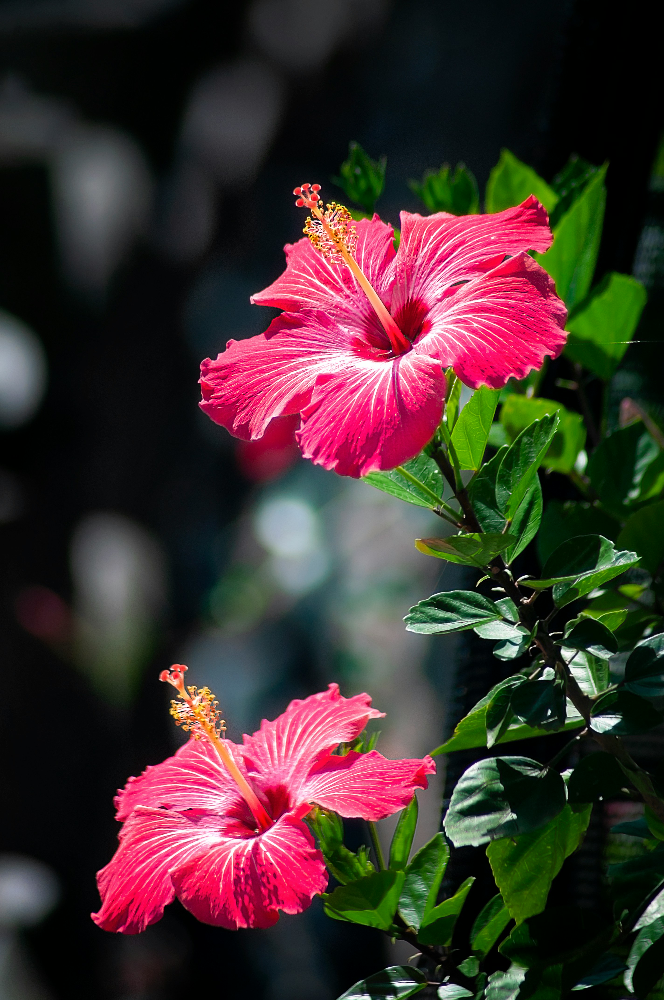

Welcome to Sunset Bloom 🌞
Built for the Brightest Horizons.
Bringing warmth, energy, and clarity to everything we do
Just like the sun rises every day to light up the world, we are dedicated to showing up with consistent energy, fresh perspectives, and a drive to move forward. Welcome to a space powered by passion and brilliant ideas.
About Section
The Beauty of Sunsets and Flowers
Sunsets symbolize peace, hope, and endings that lead to new beginnings. Flowers represent beauty, growth, and life. Together, they create a calming and inspiring experience for nature lovers.
Featured Flowers
Popular Sunset Flowers

Bright and cheerful flowers that follow the sun and symbolize happiness and positivity.

Known for love and beauty, roses come in many sunset-inspired colors like orange, red, and pink.

Simple yet elegant flowers representing innocence and joy.

Tropical flowers with vibrant colors that match sunset skies beautifully.
🌹 Roses
- Symbolize love and romance
- Available in many colors
- Popular in bouquets and gardens
Rose Colors Meaning
- Red: Love and passion
- Pink: Gratitude and admiration
- White: Purity and innocence
- Yellow: Friendship and joy
🌻 Sunflowers
- Follow the sun’s movement
- Symbolize happiness and positivity
- Bright yellow petals and large centers
Fun Fact :Sunflowers can grow very tall and are known as “sun-following” flowers.
🌸 Daisy
- Soft pink flowers
- Bloom during spring
- Symbolize beauty and new beginnings
- Tropical flowers with vibrant colors
- Symbolize passion and beauty
- Common in lei and floral arrangements
- Simple yet elegant flowers
- Represent innocence and joy
- Common in gardens worldwide
- Enhance mood and reduce stress
- Improve air quality
- Attract pollinators like bees and butterflies
- Used in medicine and aromatherapy
- 🌱 Water Properly but avoid overwatering
- ☀️ Give Sunlight
- 🌿 Use Good Soil
- ✂️ Trim Dead Leaves
- Colorful skies create a stunning visual display
- Symbolize the end of the day and new beginnings
- Provide a moment of reflection and tranquility
- Beachfronts and coastal areas
- Mountain tops and high viewpoints
- Open fields and countryside
- Use a tripod for stability
- Experiment with different angles and compositions
- Capture the changing colors as the sun sets
🌺 Hibiscus
🌼 Daisies
Benefits & Care
How flowers enhance our lives
Benefits of Flowers
Flower Care Tips
SUNSET GALLERY

The Magic of Sunsets

A sunset is one of nature’s most breathtaking moments. The sky transforms into shades of orange, pink, red, and purple as the sun slowly disappears below the horizon.
Why Sunsets Are Beautiful